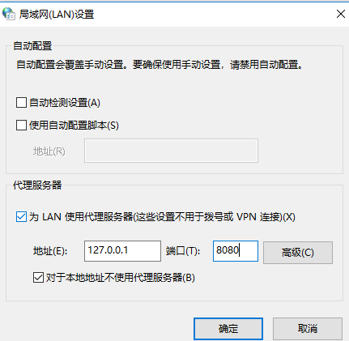

Node 技巧笔记6 - 网络
学习Node的网络模块，包括dgram、dns、http、net等模块。其中http基于net、stream、buffer、events等模块，不仅封装良好，且易于扩展。
技巧45 创建TCP服务端和客户端
net模块构成了Node网络的基础，通过net.createServer创建一个服务，然后调用server.listen绑定一个端口；连接服务端则用net.conncet创建一个客户端或可以使用telnet连接。
net.createServer方法返回一个对象，用来监听一个指定的TCP端口，当客户端连接上该server时，传递给net.createServer的回调函数将会执行，回调的参数是一个面向事件的对象。
简单TCP服务器实现1
2
3
4
5
6
7
8
9
10
11
12
13
14
15
16
17
18
19
20
21const net = require('net');
let clients = 0; // 记录每一个连接的ID
let server = net.createServer(client=>{
clients++;
let clientId = clients;
console.log(`Client connected: ${clientId}`);
// 通过end事件，追踪用户断开连接
client.on('end',()=>{
console.log(`Client disconnected: ${clientId}`);
});
client.write(`Welcome client: ${clientId}`);
client.pipe(client); // 通过管道将客户端数据直接原样返回
});
server.listen(8000, ()=>{
console.log('Server start on port 8000');
});
技巧46 使用客户端测试TCP服务器
使用net.connect连接服务端端口。
由于TCP和UDP靠端口识别，所以完全能在一个进程中创建多个服务端和客户端。
通过创建一个进程内服务的客户端链接，然后在数据通过网络发送时运行断言。1
2
3
4
5
6
7
8
9
10
11
12
13
14
15
16
17
18
19
20
21
22
23
24
25
26
27
28
29
30
31
32
33
34
35
36
37
38
39
40
41
42
43
44
45
46
47
48
49
50
51
52const assert = require('assert');
const net = require('net');
let clients = 0; // 记录每一个连接的ID
let expectedAssertions = 2;
let server = net.createServer(client=>{
clients++;
let clientId = clients;
console.log(`Client connected: ${clientId}`);
// 通过end事件，追踪用户断开连接
client.on('end',()=>{
console.log(`Client disconnected: ${clientId}`);
});
client.write(`Welcome client: ${clientId} \r\n`);
client.pipe(client); // 通过管道将客户端数据直接原样返回
});
server.listen(8000, ()=>{
console.log('Server start on port 8000');
// 一旦服务端开始监听，则运行runTest函数，其接收预期的客户端ID，并触发回调
runTest(1, ()=>{
runTest(2, ()=>{
console.log('Test finished');
assert.equal(0, expectedAssertions);
server.close();
});
});
});
// runTest函数接收一个回调，这样可以嵌套测试
function runTest(expectedId, done){
// connect方法第一个参数为端口号，
// 第二个参数为可选的IP地址或主机名，默认为localhost
// TCP是双工的，所以client本身也可以接收/发送数据。
let client = net.connect(8000);
client.on('data', data=>{
let expected = `Welcome client: ${expectedId} \r\n`;
assert.equal(data.toString(), expected);
expectedAssertions--;
client.end();
});
// 当客户端断开链接时，触发注册的done回调函数，
client.on('end', done);
}
输出结果如下：
Server start on port 8000
Client connected: 1
Client disconnected: 1
Client connected: 2
Client disconnected: 2
Test finished
技巧47 改进实时性底的应用
Node的net模块是相对高层的，其提供了一些底层的方法。比如通过TCP_NODELAY标识判断是否使用Nagle算法。
Nagle算法是指当一个连接有未确定的数据时，小片段应该保留，直到足够的数据被接收，这些小片段将被分批成能够被传输的更大的片段。
当网络中有很多小片段传输时，理想的应该将小片段集合起来一起发送减少拥堵，当若需要实时性高时，则需要关闭Nagle算法，直接传输小片段。
1 | const net = require('net'); |
技巧48 通过UDP传输文件
使用dgram创建数据报socket并使用socket.send发送数据。
因为UDP是无状态协议，所以客户端需要一次性写入一个数据报，而且数据报的大小必须小于65507字节，即小于最大传输单元MTU（Maximum Transimission Unit），其最大为64KB。
1 | const fs = require('fs'); |
技巧49 UDP客户端服务应用
UDP常用于查询-响应协议，比如DNS、DHCP，且都需要将消息发送会客户端。
UDP和TCP不一样，TCP是双工的，所以一旦连接则可以使用client.write写入消息，通过监听data事件获取消息。而UDP是非面向连接的，即不需要连接就可以接收消息。
下例实现了一个简单的客户端-服务端聊天室，允许客户端通过UDP连接到一个中心服务器，并相互通信，服务端在一个数组里保存了每一个客户端，因此能独立映射每一个。通过保存的客户端地址和端口，甚至可以在一个机器运行多个客户端，在同一个电脑多次运行这个程序。
1 | const assert = require('assert'); |
技巧50 HTTP服务器
HTTP协议基于TCP协议，也是无状态的，而Node的http模块则更新是直接基于TCP模块构造的。
HTTP服务器被扩展成为支持多种HTTP协议的元素，解析头部信息，处理响应码，并且设置sockets上的各种事件，Node HTTP处理响应码的重点是解析，本质是一个经过C++封装后的C解析库，这个库能提取头部信息和值，Content-Length、请求方法、响应状态码等。
可以在一个进程中使用http.createServer、http.createClient构建HTTP服务器并进行测试。1
2
3
4
5
6
7
8
9
10
11
12
13
14
15
16
17
18
19
20
21
22
23
24
25
26
27const assert = require('assert');
const http = require('http');
let server = http.createServer((req, res) => {
res.writeHead(200, {'Content-Type': 'text/plain'});
res.write('Hello, world~\r\n');
res.end();
});
server.listen(8000, () => {
console.log('Listening on port 8000');
});
// 使用http.request创建请求
let req = http.request({port: 8000}, res => {
console.log(`HTTP headers: ${res.headers}`);
res.on('data', data => {
console.log(`Body: ${data.toString()}`);
assert.equal('Hello, world~\r\n', data.toString());
assert.equal(200, res.statusCode);
server.unref();
});
});
req.end();
技巧51 重定向
Node http模块提供了处理HTTP请求的API，但其无法处理重定向，比如下载页面。如何维护跨多个请求的状态，即重定向如何被正确执行而无需创建重定向循环或其他什么。
HTTP标准定义了表示重定向发生时的状态码，而且它也指出客户端应该检测无限循环。
通过一个简单的类来保留每个请求的状态、重定向和重定向检测循环。1
2
3
4
5
6
7
8
9
10
11
12
13
14
15
16
17
18
19
20
21
22
23
24
25
26
27
28
29
30
31
32
33
34
35
36
37
38
39
40
41
42
43
44
45
46
47
48
49
50
51const https = require('https');
const http = require('http');
const url = require('url');
class Request{
constructor(){
this.maxRedirects = 10;
this.redirects = 0;
}
get(href, cb){
let uri = url.parse(href);
let opt = {host: uri.host, path: uri.path};
let httpGet = uri.protocol === 'http:' ? http.get : https.get;
console.log(`GET: ${href}`);
// 检查是否是需要重定向
function processResponse(res) {
if(res.statusCode >= 300 && res.statusCode < 400){
if(this.redirects >= this.maxRedirects){
this.error = new Error(`Too many redirects for: ${href}`);
}else{
this.redirects++;
href = url.resolve(opt.host, res.headers.location);
return this.get(href, cb);
}
}
res.url = href;
res.redirects = this.redirects;
console.log(`Redirects: ${href}`);
function end(){
console.log('Connection ended');
cb(this.error, res);
}
res.on('data', data => {
console.log(`Got data, length: ${data.length}`);
});
res.on('end', end.bind(this));
}
httpGet(opt, processResponse.bind(this))
.on('error', err => {
cb(err);
});
}
}
访问京东的老地址来测试重定向1
2
3
4
5
6
7
8
9let request = new Request();
request.get('http://www.360buy.com/', (err, res) => {
if(err) {
console.error(err);
}else{
console.log(`Fetched URL: ${res.url} with ${res.redirects} redirects`);
process.exit();
}
});
输出：1
2
3
4
5
6
7
8
9
10
11
12
13GET: http://www.360buy.com/
GET: http://www.jd.com/
GET: https://www.jd.com/
Redirects: https://www.jd.com/
Got data, length: 15992
Got data, length: 16384
Got data, length: 16384
Got data, length: 16384
Got data, length: 16384
Got data, length: 16384
Got data, length: 14238
Connection ended
Fetched URL: https://www.jd.com/ with 2 redirects
技巧52 HTTP代理
HTTP代理很常用，比如ISP通过透明代理使网络更高效，系统缓存代理减少带宽，DevOps利用代理提高应用程序性能。代理服务器可提供一定程度的重定向，可用在多处，比如缓存、日志、安全等。
最简单的代理的功能就是：获取HTTP请求和响应，然后将其发送到对应的地址。1
2
3
4
5
6
7
8
9
10
11
12
13
14
15
16
17
18
19
20
21
22
23
24
25
26
27
28
29
30
31
32
33
34
35const http = require('http');
const url = require('url');
http.createServer((req, res) => {
console.log(`Start request: ${req.url}`);
let opts = url.parse(req.url);
opts.headers = req.headers;
// 复制原始请求为代理请求
let proxyReq = http.request(opts, proxyRes => {
// 监听数据，然后返回给浏览器
proxyRes.on('data', chunk => {
console.log(`proxyResponse length: ${chunk.length}`);
res.write(chunk, 'binary');
});
// 追踪代理请求结束事件
proxyRes.on('end', () => {
console.log('proxied request ended');
res.end();
});
// 发送头部信息给服务器
res.writeHead(proxyRes.statusCode, proxyRes.headers);
});
// 监听浏览器发出的数据
req.on('data', chunk => {
console.log(`in request length: ${chunk.length}`);
proxyReq.write(chunk, 'binary');
});
// 追踪原始请求结束事件
req.on('end', () => {
console.log('original request ended');
proxyReq.end();
});
}).listen(8080);
在系统本地设置代理，将地址和端口分别设置为localhost和8080，然后在CLI启动这个简单代理服务器，然后访问网页就可以看到代理每一个请求和响应了。
比如在Window上设置系统代理：

注意，此代理仅在访问http协议地址有效。对https协议无法代理。
技巧53 创建DNS请求
Node的DNS模块是独立的，当使用http或net模块连接远程服务时，其内部将会使用dns.lookup查找IP地址。
当查询一个DNS记录时，结果可能包含不同的记录类型，DNS时一个分布式数据库，因此不仅仅可用来解析IP地址，还提供其他功能。具体的记录类型及其功能如下：
| 类型 | 方法 | 描述 |
|---|---|---|
| A | dns.resolve | 一个A记录存储IP地址，其关联的TTL表示该记录多久需要更新 |
| TXT | dns.resolveTxt | 文本值用于在DNS上构建其他服务 |
| SRV | dns.resolveSrv | 服务器记录定义服务的定位数据，通常包括主机名和端口 |
| NS | dns.resolveNs | 用于指定域名服务器 |
| CNAME | dns.resolveCname | 相关的域名记录，设置域名而不是IP地址 |
dns.lookup可以用来查找IPv4和IPv6地址，当找到多个地址时，能够自动替换为更快的dns.resolve。dns.lookup内部有一个线程池，且API更友好，内部使用getaddrinfo与其他程序一致，而dns.resolve关心性能。
1 | const dns = require('dns'); |